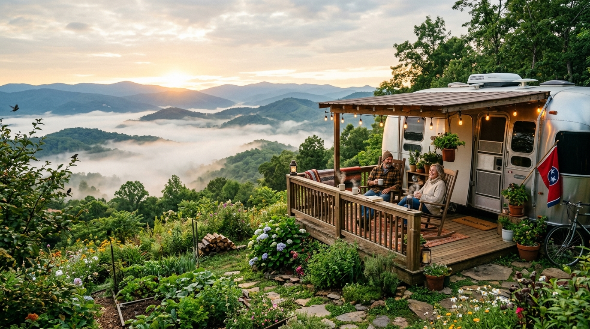

Imagine waking up each morning, pouring a hot mug of coffee, and stepping outside your camper door to greet a gentle breeze rolling over mist-covered Appalachian ridges. The birds are singing in the hardwood canopy, the air carries the scent of fresh pine, and there is no stressful bumper-to-bumper commute ahead of you. For an ever-growing community of travelers, this is no longer an occasional vacation getaway—it is their everyday reality through long-term RV living Bristol TN.
Rising home prices, high interest rates, and expanding remote work have prompted thousands to trade traditional homeownership for the freedom of full-time camper living Tennessee style.
Yet thriving in an extended camper lifestyle requires the right foundation: dependable full hookups, scenic breathing room, fair monthly rates, and a welcoming neighborhood atmosphere. That is why so many campers choose their mountain camper lot rental at Bristol Hilltop Camping. In this complete guide, we examine why Bristol is the ultimate mountain destination, how monthly lot rentals compare to buying land, the financial math behind camper living, and what life looks like on our elevated ridge.
The Rise of Long-Term RV Living & Full-Time Camper Life in Appalachia
RV living was once associated primarily with weekend road trips or retired snowbirds migrating toward southern beaches. Today, extended camper residency has become an intentional, empowering lifestyle embraced across generations:
- Remote Workers & Digital Nomads: Professionals enjoying fast connectivity alongside panoramic mountain views instead of cubicle walls.
- Traveling Medical Staff & Contractors: Specialists on Tri-Cities assignments who prefer their own comfortable rig over costly short-term leases.
- Active Retirees: Down-sizers trading property taxes, lawn care, and home repairs for outdoor recreation and simple living.
- Motorsport Fans: Race enthusiasts wanting a permanent vacation base steps from Bristol Motor Speedway.
Southern Appalachia, particularly Northeast Tennessee, has emerged as the premier setting for this lifestyle. The region pairs breathtaking mountain scenery and clean air with genuine small-town hospitality and modern infrastructure. Securing a monthly RV lot Appalachian mountains retreat provides an invigorating outdoor sanctuary where nature serves as an endless extension of your living room.
Why Bristol, TN Is Perfect for Mountain Camper Living
Location dictates daily comfort and cost of living. Bristol, Tennessee—nestled gracefully in the Great Appalachian Valley against the Blue Ridge mountains—stands out as an ideal mountain home:
- Zero State Income Tax & Low Cost of Living: Tennessee has no wage income tax, and Bristol’s everyday expenses remain well below national averages.
- Ridge Views Without Isolation: Enjoy scenic Appalachian views just minutes from regional hospitals, supermarkets, and specialty retailers.
- World-Class Recreation: Boating on South Holston Lake, blue-ribbon trout fishing on the South Holston tailwaters, and hiking the Appalachian Trail.
- Rich Historic Culture: Downtown State Street features artisan cafes, craft breweries, and the Birthplace of Country Music Museum.
Ready to Make the Mountain Move?
Experience the peace and financial freedom of long-term RV living at Bristol Hilltop Camping. Our full-hookup sites offer elevation views just 0.9 miles from Bristol Motor Speedway.
📞 Call Bristol Hilltop Camping: (423) 383-5373Benefits of Monthly & Yearly Lot Rentals vs. Buying Mountain Land
Campers often contemplate purchasing raw mountain land to park an RV. However, developing undeveloped mountain acreage quickly turns into an expensive, stressful ordeal. Comparing raw land to an established mountain camper lot rental reveals clear advantages:
🚫 The Hidden Costs of Raw Mountain Land
Rocky Soil & Perc Failures: Mountain soil is thin and rocky. Failing a soil perc test requires engineered septic systems costing $20,000 to $35,000 before parking your rig.
Well Drilling Expenses: Drilling through Appalachian limestone typically runs $8,000 to $20,000+, with no guaranteed water flow or purity.
Zoning Restrictions & Washouts: Hillside road grading and utility pole installation cost thousands, and most local zoning ordinances ban living full-time in an RV on unimproved land without an active residential building permit.
✅ The Bristol Hilltop Rental Advantage
Turnkey from Day One: Back into your level site, connect electric, water, and sewer, and you are fully moved in within forty-five minutes.
No Capital Risk or Property Taxes: Keep your savings securely invested without paying real estate taxes, assessment hikes, or mortgage interest.
Grounds Maintenance Included: Mowing, weed-whacking, and utility infrastructure upkeep are handled for you with family pride.
What Full Hookup (FHU) Really Means & Why It Matters
For stays longer than a few days, full hookups are indispensable for comfortable living. In the RV community, Full Hookup (FHU) means your site provides three dedicated, continuous utility connections:
- Dedicated 30-Amp & 50-Amp Electric: Heavy-duty pedestals supply reliable power for dual rooftop ACs, residential fridges, and heaters without generators.
- Continuous Pressurized City Water: Treated municipal water provides endless pressure for hot showers and cooking without tank monitoring.
- Direct In-Ground Sewer Drops: Dedicated sewer hookups eliminate messy portable waste totes and dump station lines.
Full Hookup Sites for Extended Stays
Enjoy dependable 30/50-amp power, city water, and direct sewer in a scenic mountain setting. Call our team at Bristol Hilltop Camping to discuss current site availability.
📞 Check Availability: (423) 383-5373The Bristol Hilltop Advantage: Elevation, Trackside Proximity & Family Care
Unlike commercial RV parks that crowd rigs onto hot asphalt pads beside loud interstates, Bristol Hilltop Camping offers a peaceful, scenic environment rooted in genuine Appalachian hospitality:
- Elevated Ridge Views & Mountain Breezes: Our hilltop location captures wide-open ridge vistas and cool mountain breezes that make summer evenings remarkably pleasant.
- 0.9 Miles from Bristol Motor Speedway: Walk to the world's most famous short track in 15 minutes. Avoid bumper-to-bumper race day traffic on Highway 11E and steep stadium parking charges.
- Guaranteed Occupancy During Major Events: We never displace our long-term campers or charge gouged surge rates during NASCAR race weekends. Your site remains your home year-round.
- Family-Owned Pride & Attentive Hospitality: As an independent family business, we know our campers personally, maintain spotless grounds, and ensure a safe, peaceful neighborhood.
Cost Comparison: Monthly RV Lot vs. Apartment vs. Traditional Mortgage
Financial freedom is a major driver of long-term RV living Bristol TN. Here is how a monthly lot rental compares with area apartments and single-family homes:
| Expense Category | 🏕️ Bristol Hilltop Lot | 🏢 Bristol Apartment (1-2 BR) | 🏡 Single-Family Home |
|---|---|---|---|
| Monthly Rent / Mortgage | $500 – $700 / mo | $1,250 – $1,650 / mo | $1,850 – $2,400+ / mo |
| Water & Sewer | INCLUDED | $60 – $90 / mo | $70 – $110 / mo |
| Trash Service | INCLUDED | $25 – $40 / mo | $30 – $45 / mo |
| Electricity | $60 – $120 / mo (metered) | $110 – $180 / mo | $160 – $260 / mo |
| Property Taxes | $0 (Owner pays) | $0 (Built into rent) | $180 – $320 / mo |
| Insurance | $35 – $75 / mo (RV policy) | $25 – $40 / mo | $120 – $200 / mo |
| Lawn & Maintenance | $0 (Included) | $0 (Included) | $100 – $250 / mo |
| Upfront Move-In Cost | First month + modest deposit | First, last, security ($3,000+) | 20% Down + closing ($50k+) |
| ESTIMATED MONTHLY TOTAL | $600 – $895 / mo | $1,470 – $2,000 / mo | $2,510 – $3,585+ / mo |
Choosing an affordable mountain camper lot rental saves residents between $800 and $2,200 per month—totaling $9,600 to $26,000 annually. That surplus can eliminate debt, fund retirement, or support travel without financial anxiety.
Cut Your Monthly Living Costs in the Mountains
Why spend thousands on apartment leases or mortgages when you can enjoy peaceful hilltop living? Call Bristol Hilltop Camping at (423) 383-5373 to explore our monthly and annual lot openings.
📞 Call Today: (423) 383-5373Seasonal Beauty: Four Splendid Mountain Seasons
One of the greatest joys of living in East Tennessee is experiencing the distinct charm of four balanced seasons:
- 🌸 Spring Wildflowers: Flowering dogwoods and pink redbuds blanket the forest edges while trout season peaks and crisp 65-degree mountain breezes drift through your windows.
- ☀️ Summer Fireflies: Daytime lake outings on South Holston Lake give way to refreshing evening breezes in the 60s and magical displays of fireflies over the hilltop tree line.
- 🍂 Autumn Foliage: Holston Mountain bursts into vibrant scarlet, amber, and gold canopy colors, complemented by brisk campfire nights and NASCAR race excitement.
- ❄️ Winter Snow Dustings: Winters are mild and manageable. Light powdery snow occasionally frosts the peaks before melting in afternoon sun, creating peaceful, cozy winter living.
Remote Work from Your RV: Internet & Connectivity in Bristol
For remote professionals, reliable internet is essential. Staying at Bristol Hilltop provides ideal conditions for dependable online work:
- Strong 5G Cellular Coverage: Major wireless carriers (Verizon, AT&T, and T-Mobile) maintain robust 5G coverage throughout the Bristol corridor, delivering fast speeds for video conferencing and cloud workflows.
- Clear Sky Sightlines for Starlink: Because Bristol Hilltop rests on an open ridge rather than deep within a narrow tree-covered valley, campers enjoy wide, unobstructed sky views for optimal Starlink satellite connectivity.
- Flexible Mobile Office Setups: Modern fifth wheels and travel trailers offer ergonomic desk nooks where you can work productively while enjoying scenic Appalachian views.
Community Life: Neighbors, Potlucks & Shared Experiences
A key difference between RV parks and typical suburban neighborhoods is the quality of human connection. Campers share a mutual love for simple living, the outdoors, and neighborly goodwill:
- Helpful Neighbors: Whether you need a tool, winterizing tips, or a hand leveling your rig, fellow campers are always eager to lend assistance.
- Porch Chats & Campfire Gatherings: Evening strolls naturally turn into casual chats on camper steps, sharing stories of favorite travels, fishing holes, and local recommendations.
- A Respectful, Quiet Atmosphere: Our extended-stay community values peaceful nights, considerate pet etiquette, and a serene, safe environment for everyone.
Your Mountain Lot Is Waiting at Bristol Hilltop
Join a welcoming community of fellow campers and enjoy full hookups, scenic ridge views, and unbeatable convenience in Bristol, TN. Call our family team at (423) 383-5373 today to reserve your monthly or yearly lot!
📞 Call Bristol Hilltop Camping: (423) 383-5373Frequently Asked Questions About Long-Term Mountain Living in Bristol
Here are answers to the most common questions prospective long-term campers ask about extended stays at Bristol Hilltop Camping:
Long-term RV living in Bristol, TN provides significant cost savings, zero Tennessee state income tax, a balanced four-season climate, scenic mountain vistas, and immediate access to South Holston Lake, the Appalachian Trail, and historic downtown Bristol.
Developing raw mountain acreage involves steep grading costs, rocky perc test failures, well drilling fees ($8,000–$20,000+), and restrictive zoning laws that frequently ban full-time RV occupancy. Renting a monthly lot at Bristol Hilltop Camping is turnkey from day one with full hookups and zero property taxes.
Every long-term lot includes full hookups: heavy-duty 30-amp and 50-amp electrical pedestals, continuous pressurized municipal city water, direct in-ground sewer connections, trash disposal, and regular grounds maintenance.
Yes. Bristol has robust 5G coverage across Verizon, AT&T, and T-Mobile. In addition, our elevated hilltop ridge provides wide, open sky views that give Starlink satellite antennas unobstructed connectivity.
No. Monthly and yearly lot renters enjoy guaranteed continuous occupancy year-round. You never have to relocate your rig or pay race-weekend surcharges during major speedway events.
Winters in the Appalachian foothills are comparatively mild. While nights dip below freezing with picturesque snow dustings, daytime temperatures regularly rise into the 40s and 50s. With a heated water hose and proper skirting, living comfortably year-round is easy.
Call Bristol Hilltop Camping directly at (423) 383-5373. Our family team will discuss your camper specifications, power requirements, and arrival timeline to reserve your lot.